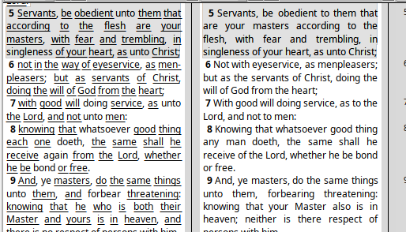
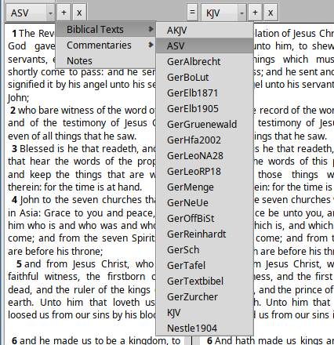
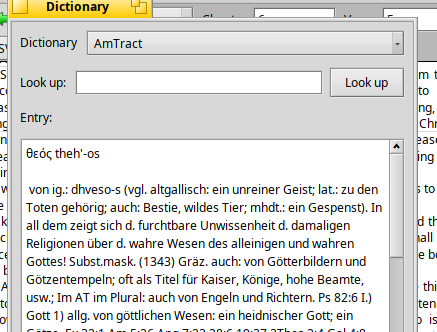
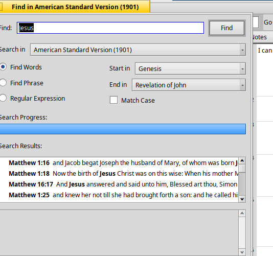
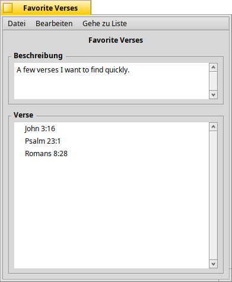

English · Deutsch
Der Lesebereich zeigt beliebig viele Übersetzungen, Kommentare und Notizspalten nebeneinander. Die Zeilen sind am Vers ausgerichtet: Derselbe Vers steht in jeder Spalte auf gleicher Höhe, ganz gleich, wie unterschiedlich die Übersetzungen umbrechen.

Jede Spalte hat einen eigenen Kopf: ein Auswahlfeld für jede installierte Bibel oder jeden Kommentar, ein +, das direkt dahinter eine neue Spalte einfügt, und ein x, das sie entfernt. Das Auswahlfeld gruppiert das Installierte nach Art, mit einem Eintrag „Notizen“, um die Spalte in eine Notizspalte zu verwandeln:

Innerhalb einer Spalte markiert man Text wie gewohnt. Sobald die Markierung mehrere Spalten umfasst, rastet sie auf ganze Verse ein – Übersetzungen sind sich selten einig, wo ein Satz endet, geschweige denn ein Wort, und der Vers ist die einzige Einheit, die über alle hinweg zusammenpasst. Eine Markierung lässt sich in eine andere Spalte ziehen, als Textschnipsel auf den Schreibtisch oder in ein anderes Programm; zieht man eine Stellenangabe zurück in eine Spalte, wird dorthin gesprungen.
Bleibt eine Spalte leer, fehlt das Buch oder Kapitel meist schlicht in diesem Modul – etwa Genesis in einem Neuen Testament oder ein Kommentar ohne Eintrag zu diesem Kapitel.
Spalten sind zu Gruppen verbunden, die gemeinsam scrollen und navigieren. Der kleine Knopf zwischen zwei Spaltenköpfen zeigt, ob sie verbunden (=) oder getrennt (/) sind; ein Klick ändert es:
Hier bilden die ersten drei Spalten eine Gruppe, die letzte steht für sich – sie kann also bei einem ganz anderen Buch stehen, während die übrigen zusammenbleiben. Jede Gruppe behält ihr eigenes Kapitel, ihre eigene Scrollposition und ihre eigene Ausrichtung. Die Felder Buch, Kapitel und Vers bewegen immer die aktive Gruppe: die, in die zuletzt geklickt wurde, erkennbar an derselben Tönung, die auch die Felder tragen.

Die Pfeile zurück und vorwärts führen durch die zuletzt besuchten Stellen, wie im Browser – einem Querverweis zu folgen bewegt die Gruppe, in der man liest, und so kommt man wieder zurück.
Buch, Kapitel und Vers bewegen die aktive Spaltengruppe; sie tragen dieselbe Tönung wie deren Spaltenköpfe, damit erkennbar ist, welche gemeint ist.
Gehe zu / Suche ist ein Feld für beides: Eine Stellenangabe wie
Johannes 3, 16 eingeben und Eingabe drücken springt
direkt dorthin; alles andere öffnet das Suchfenster mit dieser Suche.
Notizen fügt eine Notizspalte hinzu oder entfernt sie.

Eine Notizspalte wird direkt bearbeitet: Dort klicken, wo geschrieben werden soll, und der Cursor steht dort; markieren und kopieren geht über Verse hinweg, die Pfeiltasten laufen von einer Notiz in die nächste. Eingabe beginnt eine neue Zeile innerhalb derselben Notiz. Am linken Rand stehen die Versnummern, und die Zeile wächst beim Schreiben mit, sodass die Notiz neben ihrem Vers bleibt.
Notizen speichern sich beim Schreiben – es gibt keinen Speicherbefehl.
Sie liegen unter
/boot/home/config/settings/scriptureguide/notes als eigenes
SWORD-Modul, angelegt beim ersten Schreiben. Eine in eine Notiz getippte Stellenangabe wird zum Link, wie
im Bild.
Es sind mehrere Notizspalten möglich, in verschiedenen Gruppen, jede neben einer anderen Stelle.
Stellenangaben in Kommentar- oder Notiztexten (siehe Mt 16, 18)
werden als Link dargestellt; ein Klick bewegt die Gruppe, in der sie stehen.
Mit zurück geht es wieder zur Ausgangsstelle.
In Modulen, die sie enthalten, sind mit Strong-Nummern versehene Wörter unterstrichen und öffnen beim Anklicken ein Wörterbuchfenster:

Dazu muss das passende Wörterbuch installiert sein –
StrongsGreek fürs Neue, StrongsHebrew fürs Alte
Testament. Beide stehen in der Buchverwaltung. Solange keines vorhanden ist,
werden die Nummern als gewöhnlicher Text dargestellt statt als Links, die
nirgendwohin führen könnten.
Zu den meisten Einträgen steht rechts das Tastenkürzel. Vergleich kopieren legt den Text aller offenen Spalten zum aktuellen Kapitel als Tabelle Vers für Vers in die Zwischenablage – fertig zum Einfügen in eine Tabellenkalkulation oder ein Dokument.

Etwas, das keine Stellenangabe ist, in Gehe zu / Suche zu tippen öffnet das Suchfenster mit dieser Suche. Gesucht wird in den Übersetzungen, die gerade als Spalten offen sind – nicht in allem Installierten –, sodass immer das angeboten wird, was man tatsächlich liest.
Die Treffer stehen links, darunter die umgebenden Verse des gewählten
Treffers. Ein Doppelklick öffnet ihn in einem neuen Fenster. Die Suche lässt
sich auf einen Buchbereich eingrenzen, auf Groß- und Kleinschreibung achten
und auf eines der Wörter, eine genaue Wortfolge oder einen regulären
Ausdruck einstellen. Bei regulären Ausdrücken trifft P[^ ]+
jedes Wort, das mit „P“ beginnt; die anderswo üblichen Schrägstriche
(/so hier/) werden hier nicht verwendet.
Programm → Verslisten öffnet ein eigenes Fenster zum Anlegen benannter Sammlungen von Bibelstellen – ein Lesplan, eine thematische Studie, was auch immer passt. Ein Klick auf einen Eintrag springt im Lesebereich direkt zu dieser Stelle.

Jede Sammlung ist ein Ordner, eine kleine Datei pro Stelle, sodass auch der Tracker sie durchsuchen und sortieren kann. Sammlungen lassen sich verschachteln; Gehe zu Liste reicht beliebig tief hinein. Ein Doppelklick auf den Namen einer Sammlung benennt ihren Ordner direkt um. Änderungen von außerhalb der Anwendung – im Tracker, oder durch eine andere Instanz – erscheinen, ohne das Fenster neu zu öffnen.
ScriptureGuide folgt der Systemsprache und ist neben Englisch ins
Deutsche, Spanische, Französische, Kroatische, Niederländische, Rumänische
und Russische übersetzt. Auch Stellenangaben folgen der jeweiligen
Schreibweise: Auf einem deutschen System wird Johannes 3, 16
mit Komma sowohl angenommen als auch angezeigt statt John 3:16
mit Doppelpunkt – im Feld „Gehe zu / Suche“, in den Suchergebnissen und in
gezogenem Verweistext gleichermaßen.
Texte werden mit der Buchverwaltung installiert, über Programm → Buchverwaltung (oder automatisch, wenn ScriptureGuide ohne installierte Texte gestartet wird).

Links stehen die verfügbaren Module, rechts die installierten. Eines oder mehrere auswählen und mit den Pfeilen hinüberschieben: nach rechts installiert, zurück entfernt. Die Arbeit beginnt sofort beim Verschieben – vor dem Entfernen wird gefragt, weil dabei die heruntergeladenen Daten gelöscht werden. Der Fortschritt erscheint in der Zeile selbst und in der Fläche darunter, die beim Auswählen auch die Beschreibung eines Moduls zeigt. Jede Spalte lässt sich sortieren, auch Typ – nützlich, um unter mehreren hundert Bibeln die Wörterbücher zu finden.
Die Buchverwaltung holt ihre Liste über unverschlüsseltes HTTP von crosswire.org. In manchen Ländern ist es gefährlich, religiöse Inhalte online abzurufen – bitte nur fortfahren, wenn das dort, wo Sie sind, sicher ist.
/boot/home/config/settings/sword eintragen und auf
„Expand“ klicken.
Altgriechische Module brauchen eine griechische Schrift;
Aristarcoj wird
unterstützt und nach der Installation automatisch gewählt. Sie nach
/boot/home/config/non-packaged/fonts/ttfonts/ legen, unter
Einstellungen → Schriften auf „Erneut einlesen“ klicken und
ScriptureGuide neu starten. Bitte die Lizenz der Schrift beachten.